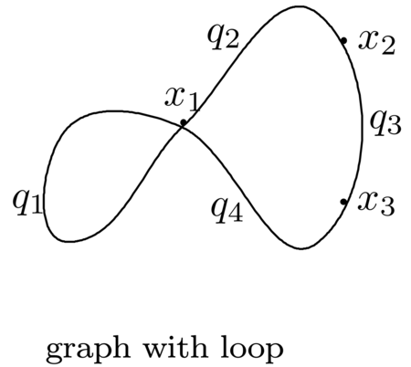

GromovWitten
Documentation for GromovWitten.
GromovWitten.GromovWitten — ModuleGromovWitten is a package for computing Gromov-Witten invariant via Feynman Integral .
GromovWitten.constterm — Methodconstterm( x1::QQMPolyRingElem, x2::QQMPolyRingElem, N::Integer)returns the constant term of the propagator
Examples (without vertex contribution)
julia> R,x=@polynomial_ring(QQ,x[1:2]); # using Nemo.
julia> constterm(x[1],x[2],3)
3*x[1]^6 + 2*x[1]^5*x[2] + x[1]^4*x[2]^2constterm(x1::QQMPolyRingElem, x2::QQMPolyRingElem, z1::QQMPolyRingElem, z2::QQMPolyRingElem,aa::Integer, N::Integer)here aa=1 is the order for sfunction series and $N=\sum_{n=1}^{3g-3} a_i$ where $a=[a_1,…,a_{3g-3}]$ is a branch type.
Examples (without vertex contribution)
julia> R,x,z=@polynomial_ring(QQ,x[1:2],z[1:2]); # using Nemo.
julia> constterm(x[1],x[2],z[1],z[2],1,2)
1//18*x[1]^4*z[1]^2*z[2]^2 + 1//3*x[1]^4*z[1]^2 + 1//3*x[1]^4*z[2]^2 + 2*x[1]^4 + 1//576*x[1]^3*x[2]*z[1]^2*z[2]^2 + 1//24*x[1]^3*x[2]*z[1]^2 + 1//24*x[1]^3*x[2]*z[2]^2 + x[1]^3*x[2]GromovWitten.feynman_integral_branch_type — Methodfeynman_integral_branch_type( x::Vector{QQMPolyRingElem}, q::Vector{QQMPolyRingElem}, G::graph ,a::Vector{Int64} ;l=zeros(Int,nv(G)))compute the Feynman Integral for a specified branch type a for all ordering Ω
Examples (without vertex contribution)
julia> G=graph([(1, 3), (1, 2), (1, 2), (2, 4), (3, 4), (3, 4)])
graph([(1, 3), (1, 2), (1, 2), (2, 4), (3, 4), (3, 4)])
julia> a=[0,2,1,0,0,1];
julia>R,x,q=polynomial_ring(G,"x","q");
julia> feynman_integral_branch_type(x,q,G,a)
256*q[2]^4*q[3]^2*q[6]^2 feynman_integral_branch_type(x::Vector{QQMPolyRingElem}, q::Vector{QQMPolyRingElem},z::Vector{QQMPolyRingElem}, G::graph ,a::Vector{Int64} ;aa=0,l=zeros(Int,nv(G)),g=zeros(Int,nv(G)))Examples (with vertex contribution)
julia> G=graph([(1, 2), (2, 3), (1, 3)])
graph([(1, 2), (2, 3), (1, 3)])
julia> a=[0,0,3];
julia>R,x,q,z=polynomial_ring(G,"x","q","z")
julia> feynman_integral_branch_type(x,q,z,G,a,aa=1,g=[1,0,0])
115//3*q[3]^6GromovWitten.feynman_integral_branch_type_order — Methodfeynman_integral_branch_type_order( x::Vector{QQMPolyRingElem}, q::Vector{QQMPolyRingElem}, G::graph ,a::Vector{Int64} ,Ω::Vector{Int64};l=zeros(Int,nv(G)))compute the Feynman Integral for a specified branch type a for a fixed ordering Ω
Examples (without vertex contribution)
julia> G=graph([(1, 3), (1, 2), (1, 2), (2, 4), (3, 4), (3, 4)])
graph([(1, 3), (1, 2), (1, 2), (2, 4), (3, 4), (3, 4)])
julia> a=[0,2,1,0,0,1];
julia> Ω=[1,3,4,2];
julia>R,x,q=polynomial_ring(G,"x","q");
julia> feynman_integral_branch_type_order(x,q,G,a,Ω)
128*q[2]^2=4*q[3]^2*q[6]^2 feynman_integral_branch_type_order(x::Vector{QQMPolyRingElem}, q::Vector{QQMPolyRingElem},z::Vector{QQMPolyRingElem}, G::graph ,a::Vector{Int64}, Ω::Vector{Int64};aa=0,l=zeros(Int,nv(G)),g=zeros(Int,nv(G)))Examples (with vertex contribution)
julia> G=graph([(1, 2), (2, 3), (1, 3)])
graph([(1, 2), (2, 3), (1, 3)])
julia> a=[0,0,3];
julia> Ω=[1,2,3];
julia>R,x,q,z=polynomial_ring(G,"x","q","z")
julia> feynman_integral_branch_type_order(x,q,z,G,a,Ω,aa=1,g=[1,0,0])
115//6*q[3]^6GromovWitten.feynman_integral_degree — Method feynman_integral_degree(x::Vector{QQMPolyRingElem}, q::Vector{QQMPolyRingElem}, G::graph,d::Integer;l=zeros(Int,nv(G)))compute the Feynman Integral for over all the partitions of the degree d for all ordering Ω
Examples (without vertex contribution)
julia> G=graph([(1, 3), (1, 2), (1, 2), (2, 4), (3, 4), (3, 4)])
graph([(1, 3), (1, 2), (1, 2), (2, 4), (3, 4), (3, 4)])
julia> a=[0,2,1,0,0,1];
julia>R,x,q=polynomial_ring(G,"x","q");
julia> feynman_integral_degree(x,q,G,3)
288*q[1]^6 + 32*q[1]^4*q[2]^2 + 32*q[1]^4*q[3]^2 + 32*q[1]^4*q[5]^2 + 32*q[1]^4*q[6]^2 + 8*q[1]^2*q[2]^2*q[5]^2 + 8*q[1]^2*q[2]^2*q[6]^2 + 8*q[1]^2*q[3]^2*q[5]^2 + 8*q[1]^2*q[3]^2*q[6]^2 + 24*q[2]^6 + 152*q[2]^4*q[3]^2 + 8*q[2]^4*q[5]^2 + 8*q[2]^4*q[6]^2 + 152*q[2]^2*q[3]^4 + 32*q[2]^2*q[3]^2*q[5]^2 + 32*q[2]^2*q[3]^2*q[6]^2 + 32*q[2]^2*q[4]^4 + 8*q[2]^2*q[4]^2*q[5]^2 + 8*q[2]^2*q[4]^2*q[6]^2 + 8*q[2]^2*q[5]^4 + 32*q[2]^2*q[5]^2*q[6]^2 + 8*q[2]^2*q[6]^4 + 24*q[3]^6 + 8*q[3]^4*q[5]^2 + 8*q[3]^4*q[6]^2 + 32*q[3]^2*q[4]^4 + 8*q[3]^2*q[4]^2*q[5]^2 + 8*q[3]^2*q[4]^2*q[6]^2 + 8*q[3]^2*q[5]^4 + 32*q[3]^2*q[5]^2*q[6]^2 + 8*q[3]^2*q[6]^4 + 288*q[4]^6 + 32*q[4]^4*q[5]^2 + 32*q[4]^4*q[6]^2 + 24*q[5]^6 + 152*q[5]^4*q[6]^2 + 152*q[5]^2*q[6]^4 + 24*q[6]^6 feynman_integral_degree( x::Vector{QQMPolyRingElem}, q::Vector{QQMPolyRingElem},z::Vector{QQMPolyRingElem}, G::graph,d::Integer;aa=0,l=zeros(Int,nv(G)),g=zeros(Int,nv(G)))Examples (with vertex contribution)
julia> G=graph([(1, 2), (2, 3), (1, 3)])
graph([(1, 2), (2, 3), (1, 3)])
julia> a=[0,0,3];
julia>R,x,q,z=polynomial_ring(G,"x","q","z")
julia> feynman_integral_degree(x,q,z,G,3,aa=1,g=[1,0,0])
115//3*q[1]^6 + 1//4*q[1]^4*q[2]^2 + 1//4*q[1]^4*q[3]^2 + 1//4*q[1]^2*q[2]^4 + 1//2*q[1]^2*q[2]^2*q[3]^2 + 1//4*q[1]^2*q[3]^4 + 115//3*q[2]^6 + 1//4*q[2]^4*q[3]^2 + 1//4*q[2]^2*q[3]^4 + 115//3*q[3]^6GromovWitten.feynman_integral_degree_order — Methodfeynman_integral_degree_order( x::Vector{QQMPolyRingElem}, q::Vector{QQMPolyRingElem}, G::graph,o::Vector{Int64},d::Integer;aa=0,l=zeros(Int,nv(G)))compute the Feynman Integral for all the partitions of the degree d for a fixed ordering Ω
Examples (without vertex contribution)
julia> G=graph([(1, 3), (1, 2), (1, 2), (2, 4), (3, 4), (3, 4)])
graph([(1, 3), (1, 2), (1, 2), (2, 4), (3, 4), (3, 4)])
julia> a=[0,2,1,0,0,1];
julia> Ω=[1,3,4,2];
julia>R,x,q=polynomial_ring(G,"x","q");
julia> feynman_integral_degree_order(x,q,G,Ω,4)
4*q[1]^4*q[2]^2*q[3]^2 + 4*q[1]^2*q[2]^4*q[5]^2 + 4*q[1]^2*q[2]^4*q[6]^2 + 4*q[1]^2*q[3]^4*q[5]^2 + 4*q[1]^2*q[3]^4*q[6]^2 + 176*q[2]^8 + 496*q[2]^6*q[3]^2 + 60*q[2]^6*q[5]^2 + 60*q[2]^6*q[6]^2 + 788*q[2]^4*q[3]^4 + 128*q[2]^4*q[3]^2*q[5]^2 + 128*q[2]^4*q[3]^2*q[6]^2 + 4*q[2]^4*q[4]^2*q[5]^2 + 4*q[2]^4*q[4]^2*q[6]^2 + 16*q[2]^4*q[5]^4 + 16*q[2]^4*q[6]^4 + 496*q[2]^2*q[3]^6 + 128*q[2]^2*q[3]^4*q[5]^2 + 128*q[2]^2*q[3]^4*q[6]^2 + 4*q[2]^2*q[3]^2*q[4]^4 + 48*q[2]^2*q[3]^2*q[5]^4 + 4*q[2]^2*q[3]^2*q[5]^2*q[6]^2 + 48*q[2]^2*q[3]^2*q[6]^4 + 176*q[3]^8 + 60*q[3]^6*q[5]^2 + 60*q[3]^6*q[6]^2 + 4*q[3]^4*q[4]^2*q[5]^2 + 4*q[3]^4*q[4]^2*q[6]^2 + 16*q[3]^4*q[5]^4 + 16*q[3]^4*q[6]^4 feynman_integral_degree_order( x::Vector{QQMPolyRingElem}, q::Vector{QQMPolyRingElem},z::Vector{QQMPolyRingElem}, G::graph,o::Vector{Int64},d::Integer;aa=0,l=zeros(Int,nv(G)),g=zeros(Int,nv(G)))Examples (with vertex contribution)
julia> G=graph([(1, 2), (2, 3), (1, 3)])
graph([(1, 2), (2, 3), (1, 3)])
julia> a=[0,0,3];
julia> Ω=[1,2,3];
julia>R,x,q,z=polynomial_ring(G,"x","q","z")
julia> feynman_integral_degree_order(x,q,z,G,o,3,aa=1,g=[1,0,0])
1//24*q[1]^4*q[2]^2 + 1//24*q[1]^4*q[3]^2 + 1//24*q[1]^2*q[2]^4 + 1//12*q[1]^2*q[2]^2*q[3]^2 + 1//24*q[1]^2*q[3]^4 + 1//24*q[2]^4*q[3]^2 + 1//24*q[2]^2*q[3]^4 + 115//6*q[3]^6GromovWitten.feynman_integral_degree_sum — Method feynman_integral_degree_sum(x::Vector{QQMPolyRingElem}, q::Vector{QQMPolyRingElem}, G::graph, d::Union{Int64, Vector{Int64}}; l=zeros(Int, nv(G)))compute the sum of all Feynman Integrals up to a certain degree d for all ordering Ω
Examples (without vertex contribution)
julia> G=graph([(1, 3), (1, 2), (1, 2), (2, 4), (3, 4), (3, 4)])
graph([(1, 3), (1, 2), (1, 2), (2, 4), (3, 4), (3, 4)])
julia>R,x,q=polynomial_ring(G,"x","q");
julia> feynman_integral_degree_sum(x,q,G,3)
288*q[1]^6 + 32*q[1]^4*q[2]^2 + 32*q[1]^4*q[3]^2 + 32*q[1]^4*q[5]^2 + 32*q[1]^4*q[6]^2 + 8*q[1]^4 + 8*q[1]^2*q[2]^2*q[5]^2 + 8*q[1]^2*q[2]^2*q[6]^2 + 8*q[1]^2*q[3]^2*q[5]^2 + 8*q[1]^2*q[3]^2*q[6]^2 + 24*q[2]^6 + 152*q[2]^4*q[3]^2 + 8*q[2]^4*q[5]^2 + 8*q[2]^4*q[6]^2 + 152*q[2]^2*q[3]^4 + 32*q[2]^2*q[3]^2*q[5]^2 + 32*q[2]^2*q[3]^2*q[6]^2 + 8*q[2]^2*q[3]^2 + 32*q[2]^2*q[4]^4 + 8*q[2]^2*q[4]^2*q[5]^2 + 8*q[2]^2*q[4]^2*q[6]^2 + 8*q[2]^2*q[5]^4 + 32*q[2]^2*q[5]^2*q[6]^2 + 8*q[2]^2*q[6]^4 + 24*q[3]^6 + 8*q[3]^4*q[5]^2 + 8*q[3]^4*q[6]^2 + 32*q[3]^2*q[4]^4 + 8*q[3]^2*q[4]^2*q[5]^2 + 8*q[3]^2*q[4]^2*q[6]^2 + 8*q[3]^2*q[5]^4 + 32*q[3]^2*q[5]^2*q[6]^2 + 8*q[3]^2*q[6]^4 + 288*q[4]^6 + 32*q[4]^4*q[5]^2 + 32*q[4]^4*q[6]^2 + 8*q[4]^4 + 24*q[5]^6 + 152*q[5]^4*q[6]^2 + 152*q[5]^2*q[6]^4 + 8*q[5]^2*q[6]^2 + 24*q[6]^6 feynman_integral_degree_sum(x::Vector{QQMPolyRingElem}, q::Vector{QQMPolyRingElem},z::Vector{QQMPolyRingElem}, G::graph, d::Union{Int64, Vector{Int64}}; aa=0, l=zeros(Int, nv(G)), g=zeros(Int, nv(G)))Examples (with vertex contribution)
julia> G=graph([(1, 2), (2, 3), (1, 3)])
graph([(1, 2), (2, 3), (1, 3)])
julia>R,x,q,z=polynomial_ring(G,"x","q","z")
julia> feynman_integral_degree_sum(x,q,z,G,3,aa=1,g=[1,0,0])
115//3*q[1]^6 + 1//4*q[1]^4*q[2]^2 + 1//4*q[1]^4*q[3]^2 + 19//4*q[1]^4 + 1//4*q[1]^2*q[2]^4 + 1//2*q[1]^2*q[2]^2*q[3]^2 + 1//4*q[1]^2*q[2]^2 + 1//4*q[1]^2*q[3]^4 + 1//4*q[1]^2*q[3]^2 + 1//12*q[1]^2 + 115//3*q[2]^6 + 1//4*q[2]^4*q[3]^2 + 19//4*q[2]^4 + 1//4*q[2]^2*q[3]^4 + 1//4*q[2]^2*q[3]^2 + 1//12*q[2]^2 + 115//3*q[3]^6 + 19//4*q[3]^4 + 1//12*q[3]^2GromovWitten.feynman_integral_degree_sum_order — Method feynman_integral_degree_sum_order(x::Vector{QQMPolyRingElem}, q::Vector{QQMPolyRingElem}, G::graph,o::Vector{Int64}, d::Union{Int64, Vector{Int64}}; aa=0, l=zeros(Int, nv(G)), g=zeros(Int, nv(G)))compute the sum of all Feynman Integrals up to a certain degree d with a fixed ordering Ω
Examples (without vertex contribution)
julia> G=graph([(1, 3), (1, 2), (1, 2), (2, 4), (3, 4), (3, 4)])
graph([(1, 3), (1, 2), (1, 2), (2, 4), (3, 4), (3, 4)])
julia> a=[0,2,1,0,0,1];
julia> Ω=[1,3,4,2];
julia>R,x,q=polynomial_ring(G,"x","q");
julia> feynman_integral_degree_sum_order(x,q,G,Ω,3)
12*q[2]^6 + 76*q[2]^4*q[3]^2 + 4*q[2]^4*q[5]^2 + 4*q[2]^4*q[6]^2 + 76*q[2]^2*q[3]^4 + 16*q[2]^2*q[3]^2*q[5]^2 + 16*q[2]^2*q[3]^2*q[6]^2 + 4*q[2]^2*q[3]^2 + 12*q[3]^6 + 4*q[3]^4*q[5]^2 + 4*q[3]^4*q[6]^2 feynman_integral_degree_sum_order(x::Vector{QQMPolyRingElem}, q::Vector{QQMPolyRingElem},z::Vector{QQMPolyRingElem}, G::graph,o::Vector{Int64}, d::Union{Int64, Vector{Int64}}; aa=0, l=zeros(Int, nv(G)), g=zeros(Int, nv(G)))Examples (with vertex contribution)
julia> G=graph([(1, 2), (2, 3), (1, 3)])
graph([(1, 2), (2, 3), (1, 3)])
julia> a=[0,0,3];
julia> Ω=[1,2,3];
julia>R,x,q,z=polynomial_ring(G,"x","q","z")
julia> feynman_integral_degree_sum_order(x,q,z,G,o,3,aa=1,g=[1,0,0])
1//24*q[1]^4*q[2]^2 + 1//24*q[1]^4*q[3]^2 + 1//24*q[1]^2*q[2]^4 + 1//12*q[1]^2*q[2]^2*q[3]^2 + 1//24*q[1]^2*q[2]^2 + 1//24*q[1]^2*q[3]^4 + 1//24*q[1]^2*q[3]^2 + 1//24*q[2]^4*q[3]^2 + 1//24*q[2]^2*q[3]^4 + 1//24*q[2]^2*q[3]^2 + 115//6*q[3]^6 + 19//8*q[3]^4 + 1//24*q[3]^2GromovWitten.filter_term — Method filter_term(p::Union{QQMPolyRingElem, Int64}, variables::Vector{QQMPolyRingElem}, s::Vector{Int64})replaces all terms of the polynomial p with zero whenever the variables raised to a power of s1 exceed the specified power s.
Examples
julia> p=feynman_integral_degree(x,q,G,4)
8*q[1]^6*q[2]^2 + 8*q[1]^6*q[3]^2 + 8*q[1]^6*q[4]^2 + 54*q[1]^4*q[2]^4 + 18*q[1]^4*q[2]^2*q[3]^2 + 18*q[1]^4*q[2]^2*q[4]^2
+ 54*q[1]^4*q[3]^4 + 18*q[1]^4*q[3]^2*q[4]^2 + 54*q[1]^4*q[4]^4 + 56*q[1]^2*q[2]^6 + 6*q[1]^2*q[2]^4*q[3]^2 + 6*q[1]^2*q[2]^4*q[4]^2
+ 6*q[1]^2*q[2]^2*q[3]^4 + 12*q[1]^2*q[2]^2*q[3]^2*q[4]^2 + 6*q[1]^2*q[2]^2*q[4]^4 + 56*q[1]^2*q[3]^6 + 6*q[1]^2*q[3]^4*q[4]^2 + 6*q[1]^2*q[3]^2*q[4]^4 + 56*q[1]^2*q[4]^6we replace all term in $p$ with q[1]^a*q[2]^b*q[3]^c > q[1]*q[2]*q[3] by zero,this means all power $(a,b,c)>(2,2,2)$
julia> filter_term(p,[q[1],q[2],q[3]],[2,2,2])
12*q[1]^2*q[2]^2*q[3]^2*q[4]^2 + 6*q[1]^2*q[2]^2*q[4]^4 + 6*q[1]^2*q[3]^2*q[4]^4 + 56*q[1]^2*q[4]^6GromovWitten.flip_signature — Methodflip_signature(G::graph ,p::Vector{Int64},a::Vector{Int64})Let Ω=[x1,...,xn] be a given Order and $a$ a branche type,flipsignature returns -1 if xi<x_j$ and O else. It will return -2 in case the Graph G has a loop.
GromovWitten.inv_sfunction — Methodinv_sfunction(z::QQMPolyRingElem,aa::Int64)returns the inverse sfunction
\[ \frac{1}{S(z,aa)}=\frac{z}{2 Sinh(z/2)}= \sum_{n = 0}^{aa} \left( \left\{\begin{array}{ll} 1 & \text{if} && n = 1\\ - \frac{- 2^n (- 2 + 2^n)}{n!} B_n & (n > = 1 && (- 1 + n)\mod 2 = 1) \end{array}\right. \right) z^n \]
Where $B_n$ is Bernoulli number and ${aa} \rightarrow \infty$.
Examples
julia> R,x=@polynomial_ring(QQ,x[1:1]); # using Nemo
julia> inv_sfunction(x[1],4)
7//5760*x[1]^4 - 1//24*x[1]^2 + 1GromovWitten.loopterm — Methodloopterm( z::QQMPolyRingElem, q::QQMPolyRingElem, aa::Integer, a::Integer)returns loop contribution with nonzero genus gi at a vertex i.
GromovWitten.partition — Methodpartition(k::Integer, n::Integer)
#Examples
This function returns the number of partitions of $n$ into fixed $k$ parts.
julia> partition(3,4)
15-element Vector{Vector{Int64}}:
[4, 0, 0]
[3, 1, 0]
[3, 0, 1]
[2, 2, 0]
[2, 1, 1]
[2, 0, 2]
[1, 3, 0]
[1, 2, 1]
[1, 1, 2]
[1, 0, 3]
[0, 4, 0]
[0, 3, 1]
[0, 2, 2]
[0, 1, 3]
[0, 0, 4]GromovWitten.proterm — Method proterm( x1::QQMPolyRingElem, x2::QQMPolyRingElem, q::QQMPolyRingElem, a::Integer, N::Integer)returns the non constant term of the propagator
Examples (without vertex contribution)
julia> R,x,q=@polynomial_ring(QQ,x[1:2],q[1:1]); # using Nemo.
julia> proterm(x[1],x[2],q[1],1,2)
x[1]^3*x[2]*q[1]^2 + x[1]*x[2]^3*q[1]^2Examples (with vertex contribution)
proterm( x1::QQMPolyRingElem, x2::QQMPolyRingElem,z1::QQMPolyRingElem, z2::QQMPolyRingElem, q::QQMPolyRingElem, a::Integer,aa::Integer, N::Integer)julia> R,x,q,z=@polynomial_ring(QQ,x[1:2],q[1:1],z[1:2]); # using Nemo.
julia> proterm(x[1],x[2],z[1],z[2],q[1],1,1,2)
1//576*x[1]^3*x[2]*q[1]^2*z[1]^2*z[2]^2 + 1//24*x[1]^3*x[2]*q[1]^2*z[1]^2 + 1//24*x[1]^3*x[2]*q[1]^2*z[2]^2 + x[1]^3*x[2]*q[1]^2 + 1//576*x[1]*x[2]^3*q[1]^2*z[1]^2*z[2]^2 + 1//24*x[1]*x[2]^3*q[1]^2*z[1]^2 + 1//24*x[1]*x[2]^3*q[1]^2*z[2]^2 + x[1]*x[2]^3*q[1]^2GromovWitten.sfunction — Methodsfunction(z::QQMPolyRingElem,k::Int64)Note:The function sfunction(z,k) takes account vertex contributions.
\[S(z, {aa}) = \sum_{n = 0}^{{aa}} \dfrac{2^{- 1 - n} (1 + (- 1)^n) }{(n + 1) !} z^n = \sum_{n = 0}^{{aa}} \dfrac{{2^{- 2 n}} }{(2 n + 1) !} z^n, {aa} \rightarrow \infty\]
Examples
julia> R,x=@polynomial_ring(QQ,x[1:1]); # using Nemo
julia> sfunction(x[1],4)
1//92897280*z[1]^8 + 1//322560*z[1]^6 + 1//1920*z[1]^4 + 1//24*z[1]^2 GromovWitten.signature_and_multiplicities — Methodsignature_and_multiplicities( G::graph, a::Vector{Int64})returns flip_signature and their multiplicities.
Examples
julia> G=graph(ve)
graph([(1, 1), (1, 2), (2, 3), (3, 1)])
julia> a=[2,0,0,1];
julia> signature_and_multiplicities(G,a)
4-element Vector{Tuple{Int64, Vector{Int64}}}:
(1, [-2, 0, 0, 1])
(2, [-2, -1, 0, 1])
(2, [-2, 0, -1, 1])
(1, [-2, -1, -1, 1])GromovWitten.substitute — Method substitute(q::Vector{QQMPolyRingElem},p::Union{QQMPolyRingElem, Int64})replace all the variables by the first variable of p. With x=\[x_1,x2,x3 \] and p(x_1,x2,x3), substitute(x,p) returns p(x1,x_1,x_1)
julia> f=x[1]*x[2]+x[1]^3*x[2]+5x[1]^6-2x[3]*x[2]
5*x[1]^6 + x[1]^3*x[2] + x[1]*x[2] - 2*x[2]*x[3]
julia> substitute(x,f)
5*x[1]^6 + x[1]^4 - x[1]^2GromovWitten.sum_of_coeff — Method sum_of_coeff(p::QQMPolyRingElem)compute the sum of coefficient of the polynomial p.
julia> f=3*x[1]^6 + 2*x[1]^5*x[2] + x[1]^4*x[2]^2
julia> sum_of_coeff(f)
6GromovWitten
The package GromovWitten computes generating series for tropical Hurwitz numbers of elliptic curves via mirror symmetry and Feynman integrals, and thus, by a correspondence theorem, Hurwitz numbers in the sense algebraic geometry. Generalizations of the method also allow for the computation of Gromov-Witten invariants for ellptic curves, and are also implemented in the package. GromovWitten is based on the computeralgebra system OSCAR and is provided as a package for the Julia programming language.
Installation
We assume that Julia is installed in a recent enough version to run OSCAR. Navigate in a terminal to the folder where you want to install the package and pull the package from Github:
git pull https://github.com/singular-gpispace/GromovWitten.gitI the same folder execute the following command:
julia --projectThis will activate the environment for our package. In Julia install missing packages:
import Pkg; Pkg.instantiate()and load our package. On the first run this may take some time.
using GromovWitten Example of graph with vertex contribution

To provide an example on how to use our package, we define a graph G from a list of edges:
julia> ve = [ (1, 2), (2, 3), (3, 1)]
julia> G = graph(ve)We then define a polynomial ring with all variables required by our implementation:
julia> R,x,q,z=polynomial_ring(G,"x","q","z")Here, the indexed variables x correspond to the vertices of the graph, the indexed variables y to the edges of the graph, and the indexed variables z again to the vertices of the graph (the latter to be used in the context of Gromov-Witten invariants with non-trivial Psi-classes).
To compute a Feynman iuntegral, we define a partition $a=[0,0,3]$ of degree d=3, a fixed order of vertex $o=[1,2,3]$ and the genus function $g=[1,0,0]$. The leak in G is $L=[0,0,0]$ , $aa=1$ is the order of the sfunction. We have then
julia> feynman_integral_branch_type_order(x,q,z,G,a,o,aa=1,g=[1,0,0])The Feynman Integral branch type for all ordering with genus function $g$ is
julia> feynman_integral_branch_type(x,q,z,G,a,aa=1,g=[1,0,0])also we can compute Feynman Integral of degree 4
julia> feynman_integral_degree(x,q,z,G,3,aa=1,l=[0,0,0],g=[1,0,0])Finally we substitute all $q$ variables by $q_{1}$
julia> substitute(q,feynman_integral_degree(x,q,z,G,3,aa=1,l=[0,0,0],g=[1,0,0]))Example of graph without vertex contribution and loop.

julia> G = graph([(1, 3), (1, 2), (1, 2), (2, 4), (3, 4), (3,4)] )
graph([(1, 3), (1, 2), (1, 2), (2, 4), (3, 4), (3, 4)])julia> R, x, q = polynomial_ring(G, "x", "q")
(Multivariate polynomial ring in 10 variables over QQ, QQMPolyRingElem[x[1], x[2], x[3],x[4]], QQMPolyRingElem[q[1], q[2],q[3], q[4], q[5], q[6]])julia> a = [0, 2, 1, 0, 0, 1];julia> o=[1,3,4,2];
julia> feynman_integral_branch_type_order(x,q,G,a,o)
128*q[2]^4*q[3]^2*q[6]^2julia> feynman_integral_branch_type(x, q, G, a)
256*q[2]^4*q[3]^2*q[6]^2julia> f = feynman_integral_degree(x, q, G, 3)
288*q[1]^6 + 32*q[1]^4*q[2]^2 + 32*q[1]^4*q[3]^2 + 32*q[1]^4*q[5]^2 + 32*q[1]^4*q[6]^2 + 8*q[1]^2*q[2]^2*q[5]^2 + 8*q[1]^2*q[2]^2*q[6]^2 + 8*q[1]^2*q[3]^2*q[5]^2 + 8*q[1]^2*q[3]^2*q[6]^2 + 24*q[2]^6 + 152*q[2]^4*q[3]^2 + 8*q[2]^4*q[5]^2 + 8*q[2]^4*q[6]^2 + 152*q[2]^2*q[3]^4 + 32*q[2]^2*q[3]^2*q[5]^2 + 32*q[2]^2*q[3]^2*q[6]^2 + 32*q[2]^2*q[4]^4 + 8*q[2]^2*q[4]^2*q[5]^2 + 8*q[2]^2*q[4]^2*q[6]^2 + 8*q[2]^2*q[5]^4 + 32*q[2]^2*q[5]^2*q[6]^2 + 8*q[2]^2*q[6]^4 + 24*q[3]^6 + 8*q[3]^4*q[5]^2 + 8*q[3]^4*q[6]^2 + 32*q[3]^2*q[4]^4 + 8*q[3]^2*q[4]^2*q[5]^2 + 8*q[3]^2*q[4]^2*q[6]^2 + 8*q[3]^2*q[5]^4 + 32*q[3]^2*q[5]^2*q[6]^2 + 8*q[3]^2*q[6]^4 + 288*q[4]^6 + 32*q[4]^4*q[5]^2 + 32*q[4]^4*q[6]^2 + 24*q[5]^6 + 152*q[5]^4*q[6]^2 + 152*q[5]^2*q[6]^4 + 24*q[6]^6julia> substitute(q,feynman_integral_degree_sum(x,q,G,8))
10246144*q[1]^16 + 3294720*q[1]^14 + 886656*q[1]^12 + 182272*q[1]^10 + 25344*q[1]^8 + 1792*q[1]^6 + 32*q[1]^4Example of graph with loop.

julia> G=graph([(1, 1), (1, 2), (2, 3), (3, 1)])
graph([(1, 1), (1, 2), (2, 3), (3, 1)])julia> R,x,q=polynomial_ring(G,"x","q")
(Multivariate polynomial ring in 7 variables over QQ, QQMPolyRingElem[x[1], x[2], x[3]], QQMPolyRingElem[q[1], q[2], q[3], q[4]])julia> O=[1,2,3] julia> a=[ 2, 0, 0, 1]
4-element Vector{Int64}:
2
0
0
1julia> feynman_integral_branch_type_order(x,q,G,a,O)
3*q[1]^4*q[4]^2julia> feynman_integral_branch_type(x,q,G,a)
6*q[1]^4*q[4]^2julia> feynman_integral_degree(x,q,G,3)
6*q[1]^4*q[2]^2 + 6*q[1]^4*q[3]^2 + 6*q[1]^4*q[4]^2 + 18*q[1]^2*q[2]^4 + 6*q[1]^2*q[2]^2*q[3]^2 + 6*q[1]^2*q[2]^2*q[4]^2 + 18*q[1]^2*q[3]^4 + 6*q[1]^2*q[3]^2*q[4]^2 + 18*q[1]^2*q[4]^4julia> substitute(q,feynman_integral_sum(x,q,G,8))
20640*q[1]^16 + 9996*q[1]^14 + 4320*q[1]^12 + 1650*q[1]^10 + 456*q[1]^8 + 90*q[1]^6 + 6*q[1]^4